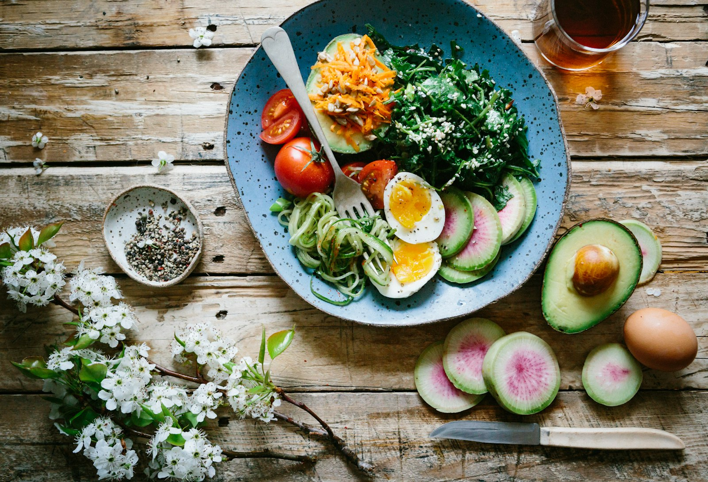

Protein
Essential for muscle repair and growth. Aim for 1.6-2.2g per kg of body weight daily for optimal muscle building.
Best Sources:
- Chicken breast
- White Fish(Cod, Tilapia)
- Eggs
- Greek yogurt
- Lean beef
- Tofu & tempeh

Fuel your fitness journey with smart nutrition
Essential for muscle repair and growth. Aim for 1.6-2.2g per kg of body weight daily for optimal muscle building.
Your body's primary energy source. Focus on complex carbs for sustained energy throughout your workouts and day.
Critical for hormone production and nutrient absorption. Include 20-35% of total calories from healthy fat sources.
1-2 hours before: Eat a meal with carbs and protein for energy. Examples: oatmeal with banana, rice with chicken, or a protein smoothie with fruit.
For workouts under 60 min: Water is sufficient. Over 60 min: Consider a sports drink or BCAA supplement to maintain energy.
Within 2 hours: Consume protein and carbs to replenish glycogen and repair muscle. Aim for 20-40g protein and carbs based on workout intensity.
Eat every 3-4 hours: Maintains energy levels and supports muscle protein synthesis. Include protein with each meal for optimal results.
Water is crucial for performance, recovery, and overall health. Proper hydration helps regulate body temperature, transport nutrients, and remove waste products.
Aim for 3-4 liters (12-16 cups) of water daily, more if you're very active or in hot conditions.
Drink 400-600ml before workout, 200ml every 15-20 min during, and rehydrate fully after.
Monitor urine color - pale yellow indicates good hydration, dark yellow suggests you need more water.
For intense or long workouts (over 60 min), include electrolytes to replace lost minerals.
Convenient way to meet daily protein needs. Whey protein is fast-absorbing (ideal post-workout), while casein is slow-digesting (good before bed).
Dosage: 20-30g per serving as needed to hit protein targets.
One of the most researched supplements. Increases strength, power, and muscle mass. Helps with high-intensity exercise performance.
Dosage: 3-5g daily, timing doesn't matter significantly.
Supports heart health, reduces inflammation, and aids recovery. Especially important if you don't eat fatty fish regularly.
Dosage: 1-2g EPA+DHA combined daily.
Essential for bone health, immune function, and testosterone production. Many people are deficient, especially in winter months.
Dosage: 1000-2000 IU daily, or as recommended by doctor.
Proven ergogenic aid that improves focus, endurance, and strength. Can be from coffee or pre-workout supplements.
Dosage: 3-6mg per kg body weight, 30-60 min before workout.
Branched-chain amino acids may help reduce muscle soreness and support recovery, especially useful if training fasted.
Dosage: 5-10g before or during workout if needed.
Important: Supplements are meant to supplement, not replace, a balanced diet. Always consult with a healthcare professional before starting any new supplement regimen. Focus on whole foods first, and use supplements to fill specific gaps in your nutrition.
For authoritative dietary advice in Ireland, please visit the Healthy Ireland Food Guidelines.